The 52 meld runes
A stone for every meld in Twin's Melds and the Floor 6–10 Melds, each with its own carved symbol, drawn the way the game draws its stones. The two coloured bars along each foot are the two runes that made it, like the melds you already have.
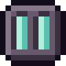
Twin melds 6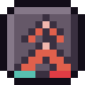
OnslaughtTwin + PowerTwo blows, one on the other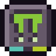
ViperTwin + PoisonTwo fangs, two drops of venom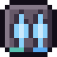
Flash FreezeTwin + FrostTwo shards of ice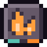
RekindleTwin + FlameA flame catching a second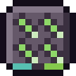
FlurryTwin + SwiftFour quick slashes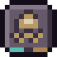
AftershockTwin + HeavyA blow, and its echo below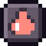
Leech melds 5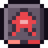
BloodlustLeech + PowerA swollen blood tick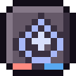
ColdbloodLeech + FrostA drop of blood, frost at its heart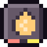
ConduitLeech + LightningA drop with a spark running through it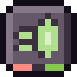
Second WindLeech + SwiftBreath drawn into a leaf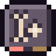
MarrowLeech + HeavyA bone, its marrow glowing Volatile melds 2
Volatile melds 2
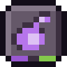
QuickfuseVolatile + SwiftA bomb on a short fuse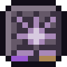
ConcussionVolatile + HeavyA burst ringing out over the ground Precise melds 6
Precise melds 6
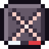
DuelistPrecise + PowerTwo crossed blades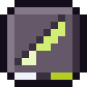
NeedlePrecise + PoisonA needle, venom at its tip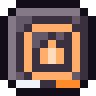
BrandPrecise + FlameA burning mark in its frame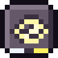
SeekerPrecise + LightningAn eye with a spark for a pupil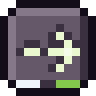
QuickdrawPrecise + SwiftAn arrow loosed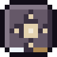
Pressure PointPrecise + HeavyOne point, marked from four sides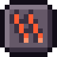
Frenzied melds 6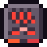
BerserkFrenzied + PowerClaw marks over a roar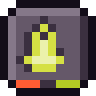
FeverFrenzied + PoisonA fever rising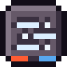
WhiteoutFrenzied + FrostSnow driving sideways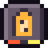
OverchargeFrenzied + LightningA cell brimming with spark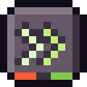
BlurFrenzied + SwiftSpeed, with afterimages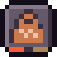
JuggernautFrenzied + HeavyA heavy iron helm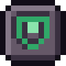
Guarding melds 6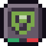
BulwarkGuarding + PowerA shield with a strong boss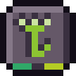
HemlockGuarding + PoisonA sprig of hemlock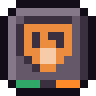
CinderwardGuarding + FlameA shield with a flame in it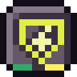
StaticGuarding + LightningA shield crackling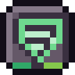
WindwardGuarding + SwiftA shield with wind across it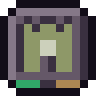
FortressGuarding + HeavyA fortress gate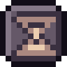
Lasting melds 7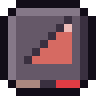
MomentumLasting + PowerA wedge that keeps growing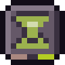
CankerLasting + PoisonAn hourglass of venom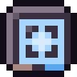
PermafrostLasting + FrostFrost locked in a frame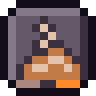
SmoulderLasting + FlameCoals still glowing, smoke rising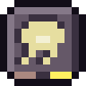
TempestLasting + LightningA storm cloud that stays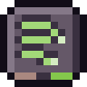
TailwindLasting + SwiftWind at your back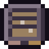
BedrockLasting + HeavyLayers of stone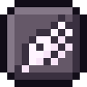
Fleeting melds 7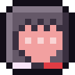
HaymakerFleeting + PowerOne huge fist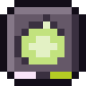
BloatFleeting + PoisonA swollen sac about to burst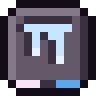
Cold SnapFleeting + FrostIcicles snapping off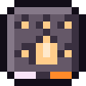
FlashfireFleeting + FlameA flame flaring, sparks flying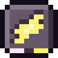
JoltFleeting + LightningA sudden bolt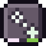
BlinkFleeting + SwiftGone from one spot, there in the nextVast melds 7
Level 2 runes 11
Two of the same rune meld into its level 2. These follow the rule the game already has for Power II and the rest: the rune's own symbol, with two bright marks along its foot.
→Volatile II→Precise IITell me in the chat if these are good, or which ones to redraw. Animations come next.